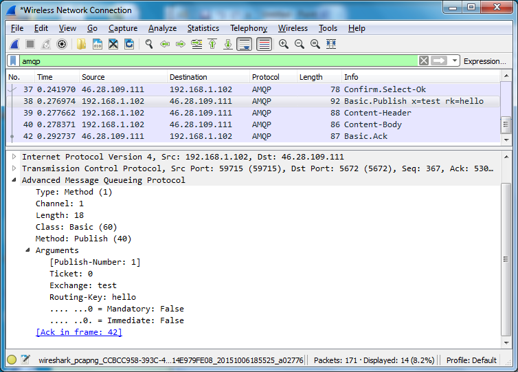

Inspecting AMQP 0-9-1 Traffic using Wireshark
Wireshark 2.0 contains enhanced support for AMQP traffic inspection and analysis. It can display any AMQP 0-8, 0-9-1 and AMQP 1.0 traffic, including AMQP 0-9-1 Errata and RabbitMQ Extensions.
Packet List and Details
Packet List provides a summary of exchanged frames. The Info column indicates the Class and Method (e.g. Basic.Publish) and then the most significant arguments. For example:
- Connection.Open vhost=(vhost)
- Connection.Close reply=(reply-text)
- Channel.Close reply=(reply-text)
- Exchange.Declare x=(exchange-name)
- Exchange.Bind dx=(dest-exchange) sx=(source-exchange) bk=(routing-key)
- Queue.Declare q=(queue-name)
- Queue.Bind q=(queue-name) x=(exchange-name) bk=(routing-key)
- Queue.Delete q=(queue-name)
- Basic.Publish x=(exchange-name) rk=(routing-key)
Packet Details then indicate all arguments of the frame. It also includes dynamically calculated values enclosed in square brackets. This is explained in next section.
Links Between Frames
Wireshark analyzes the AMQP 0-9-1 packet flow and displays additional information enclosed in square brackets:
- Arguments of basic.publish include a Publish-Number, which is the sequence number used by Confirms (aka Publisher Acknowledgements).
- Each acknowledged basic.publish or public.delivery includes a reference to the frame that contains the corresponding basic.ack.
- Similarly, each basic.ack contains a reference (possibly multiple) to frame(s) that is being confirmed by this Ack.
Expert Information
Wireshark automatically highlights AMQP 0-9-1 packets with:
- Connection errors (connection.close) and channel errors (channel.close)
- Undeliverable messages (basic.return)
You may display summary of significant frames in a dedicated dialog. Go to Analyze > Expert Information and possibly apply the display filter.

Decrypting TLS/SSL Traffic
Wireshark enables you to inspect the AMQPS traffic, however you can decrypt only the traffic that have been encrypted using the RSA keys, excluding the RSA ephemeral and Diffie-Hellman Ephemeral (DHE/EDH) cipher suites. You should set cipher suites used by RabbitMQ and restrict the list to RSA only.
[
{rabbit, [
{ssl_options, [{ciphers, [{rsa,aes_256_cbc,sha256},
{rsa,aes_128_cbc,sha256},
{rsa,aes_256_cbc,sha},
{rsa,'3des_ede_cbc',sha},
{rsa,aes_128_cbc,sha},
{rsa,des_cbc,sha}]}
]}
]}
].
Also, you must supply Wireshark with the private key used to encrypt the data. If a mutual authentication is used, you need to supply both private keys. Go to the Edit > Preferences dialog, select Protocols > SSL and then click Edit the RSA keys list.
- IP Address and Port identify the host that holds the private key, usually the server. A wildcard IP address of 0.0.0.0 and wildcard port of 0 or data can be used.
- Protocol should identify amqp.
- The private key file should be in the PEM or PKCS12 format, possibly protected by a password.

Copyright © 2007-Present Pivotal Software, Inc. All rights reserved. Terms of Use, Privacy and Trademark Guidelines